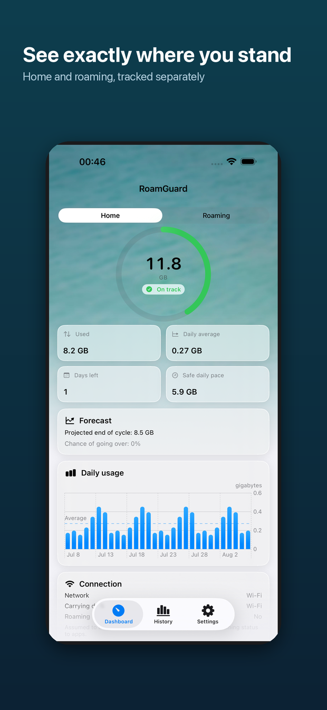
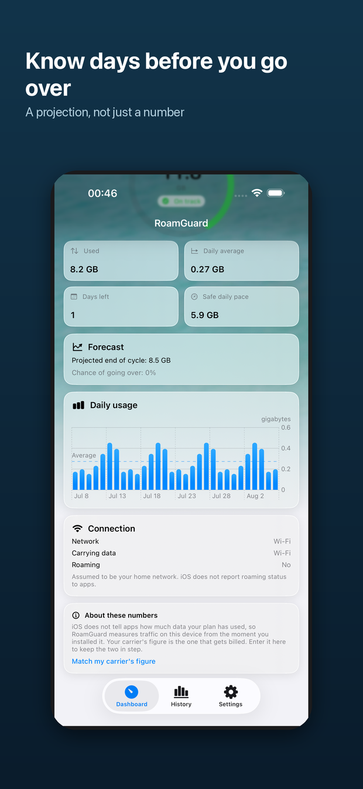
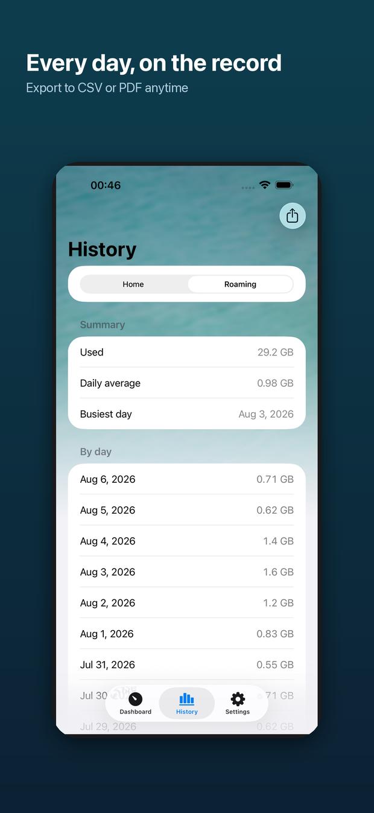
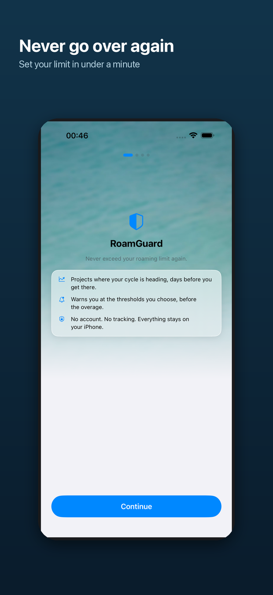

Know before you go over
RoamGuard reads the byte counters iOS keeps for each network interface, charges what it measures to a home pool or a roaming pool, and tells you where the cycle is heading days before you get there. It runs entirely on your iPhone. It has no account, no analytics, and no network layer of its own.
Read this first — what iOS will not give an app
iOS does not expose your carrier's usage figure to apps. There is no public API that reports “you have used 24 GB of your 35 GB plan”. RoamGuard cannot show you your bill, and neither can anything else on the App Store.
iOS does not tell an app whether you are roaming. No public API reports roaming status. CTCarrier, which once gave a carrier name and country, was deprecated in iOS 16 and now returns placeholder values, so RoamGuard does not use it.
Those two facts decide the whole design, so they belong at the top of this page rather than at the bottom.
The app says all of this on its own dashboard and in Settings › How it works. The full method is written out in How counting works.
What a pool looks like
Used 8.2 GB in 30 days. Daily average 0.27 GB. At this rate the cycle ends at 8.5 GB — inside the allowance. Chance of going over: 0%.
At the current pace the allowance runs out in 2 days — before the cycle rolls over. Stay under 0.15 GB a day to finish inside it.
The two bars above are diagrams drawn in HTML, not screenshots. The projection line is the point of the app: a remaining-data figure tells you where you are, the projection tells you where you end up if nothing changes.
How the projection is computed
The projected total is a linear run rate: what you have used this cycle, extended over the days that are left.
The chance of going over is separate. Each remaining day is treated as a draw from the daily usage RoamGuard has actually observed this cycle, so the remaining total has mean n·μ and variance n·σ², and the probability follows from the normal distribution. With fewer than three observed days there is not enough spread to estimate, so a deliberately wide default is used rather than reporting a confident 0%.
The risk badge reads On track, Watch out or At risk, and it is never colour alone.
| Badge | Raised when |
|---|---|
| On track | Neither condition below is met. |
| Watch out | 75% of the allowance is used, or the chance of going over reaches 20%. |
| At risk | 100% of the allowance is used, or the chance of going over reaches 50%. |
In the app




Where the number shows up
Two SIMs
A phone with two lines runs several cellular contexts at once — pdp_ip0, pdp_ip1 and others — which appear, disappear and restart independently. RoamGuard resolves each context on its own and sums afterwards. Summing first and resolving after is not a shortcut, it is a bug: one line switching on would re-anchor the total and book every byte already counted a second time.
Each line can also be charged to its own pool, because a device-wide Home/Roaming switch cannot describe a home line and a local eSIM running side by side. Lines start on “follow the switch”, so a single-SIM phone behaves as if none of this existed.
Lines are numbered, not named. Nothing public links a cellular context to a carrier, a SIM slot or a number, so the app reports how much each line carried rather than guessing a label.
Privacy, stated as mechanism
Full text: Privacy policy.